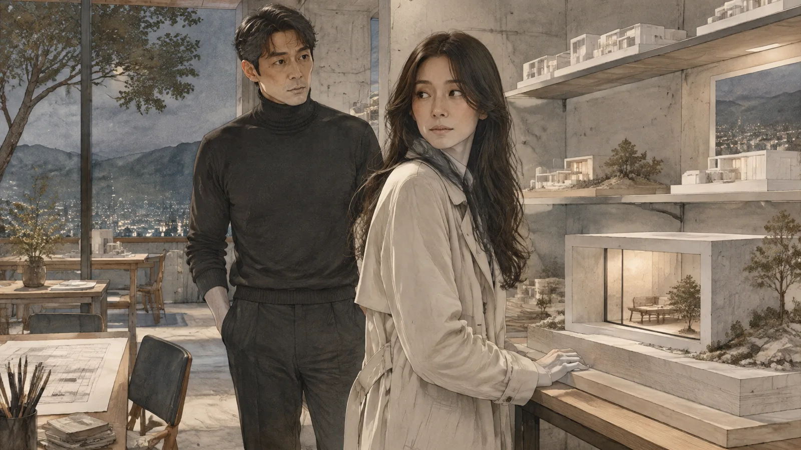
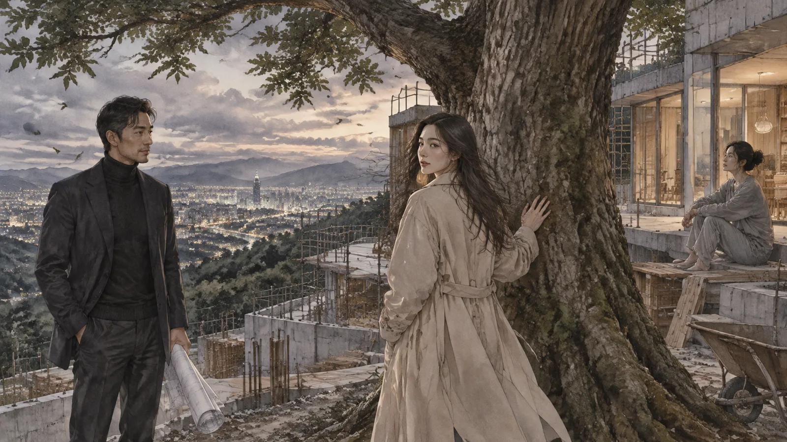
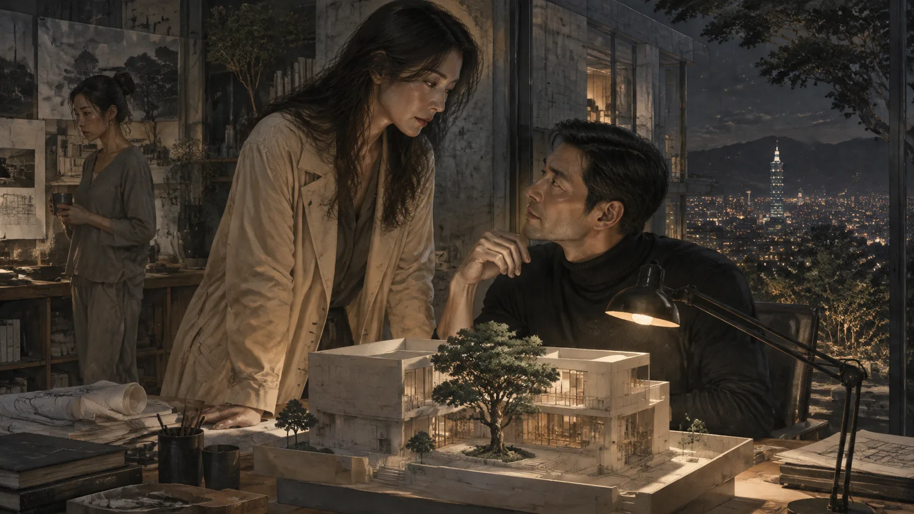
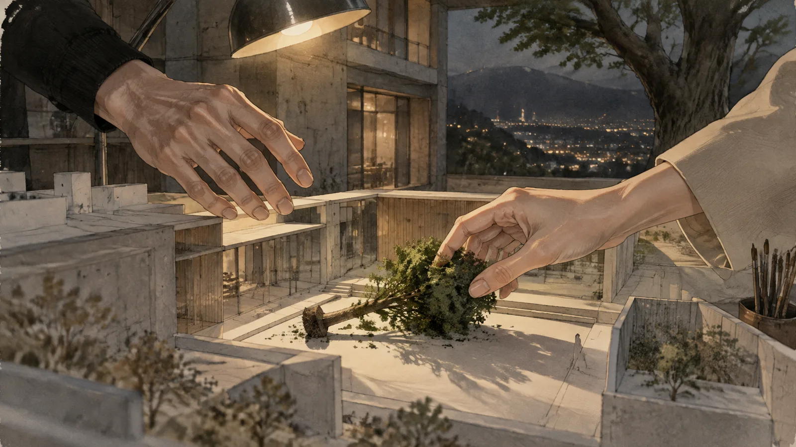
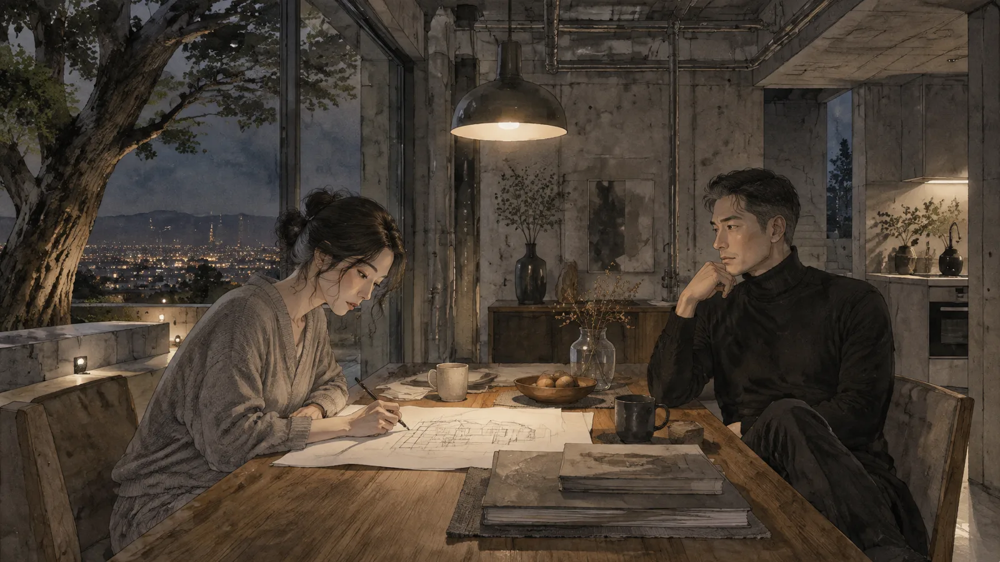
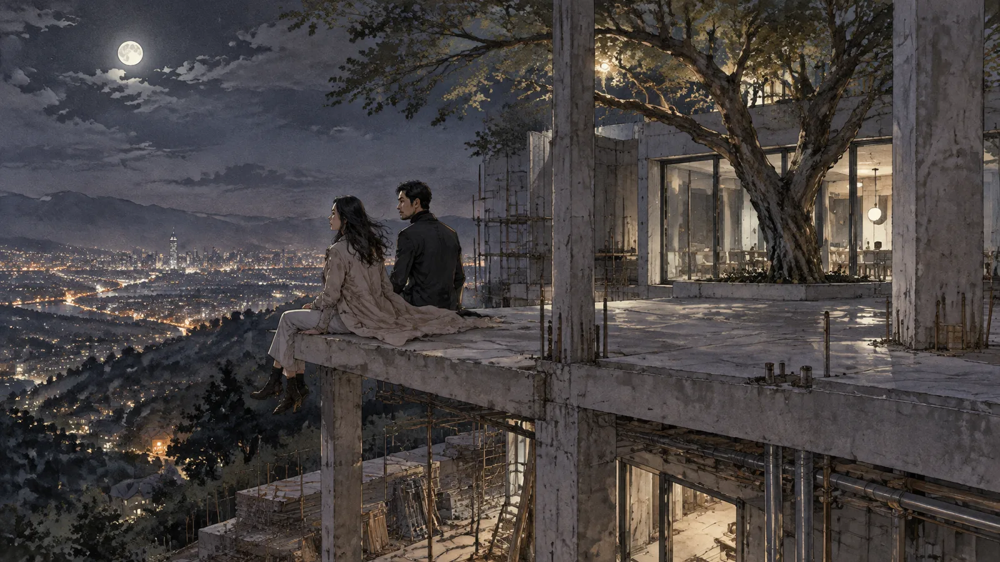
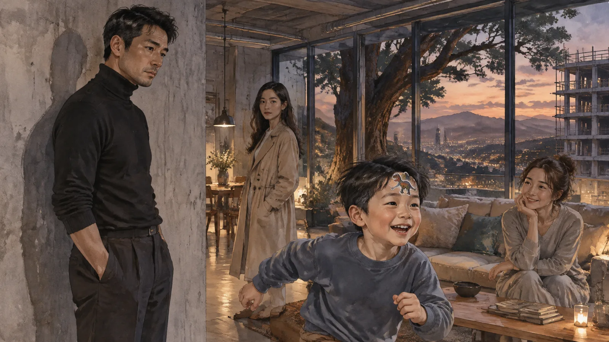
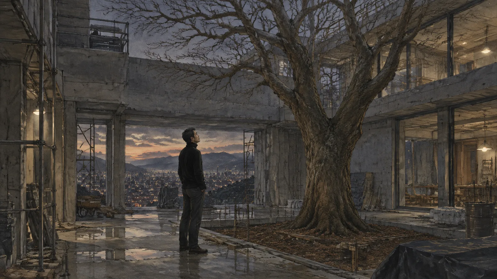
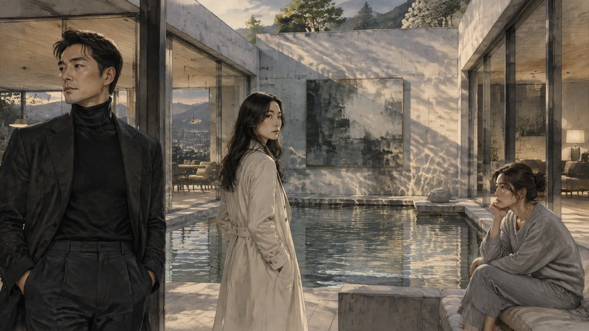
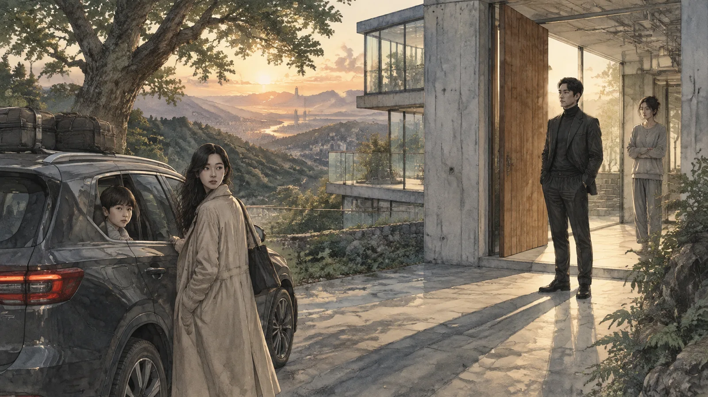

第一章誠實的建築
陸廷認為建築應該誠實。
這是他在所有的演講、訪談、得獎感言裡都會說的一句話。三十九歲，台北，一間十二個人的建築事務所，作品不多，可是每一件都被雜誌寫過。他做的房子有一個特徵：不遮掩。結構露在外面，管線露在外面，材料是什麼就讓它是什麼——水泥就是水泥，木頭就是木頭，不上漆，不貼皮。他說：「一棟房子如果騙人，住在裡面的人也會學會騙人。」
他相信這句話。他真的相信。
那對夫妻是三月來的。
先生姓何，四十五歲，做半導體設備的，很有錢，說話很快，講了二十分鐘他要什麼——「一棟可以拿去登雜誌的房子」。太太叫紀言，三十六歲，整個過程沒有講話，坐在先生旁邊，看著事務所牆上的模型。
會議結束以後，何先生去接電話，紀言站起來，走到一個模型前面。那是陸廷五年前做的一間小房子，在宜蘭，全部是清水模，只有一扇很大的窗。

「這間，」她說，「住在裡面的人，晚上會不會覺得太暴露？」
陸廷愣了一下。這是他被問過最好的問題。
「會。」他說，「可是那是設計的一部分。妳要習慣被看見。」
紀言看著他。她的眼睛很安靜，安靜到讓人不確定她在想什麼。
「那你自己呢？」她說，「你習慣嗎？」
何先生講完電話回來了。他們約了下個星期看基地。陸廷送他們到門口，何先生握手握得很用力，紀言只是點了一下頭。
那天晚上陸廷回家，他的太太在客廳看電視。她叫欣怡，是他大學同學，也是建築師，可是生了小孩以後就沒有再做了。他們有兩個孩子，一個七歲一個四歲。房子是他自己設計的，清水模，大窗，管線露在外面。欣怡曾經說過這房子「像住在一個展場裡」，他說那就是重點。
他站在客廳門口，看著欣怡的背影，看著大窗外面的夜。他忽然想到紀言的問題。
你習慣嗎？
他發現他從來沒有想過。
第二章基地
基地在陽明山的半山腰，一塊很斜的地，面對台北盆地。
他們去了三次。第一次何先生也在，講他要的東西——游泳池，酒窖，「一面可以放我收藏的牆」。第二次何先生出國，紀言一個人來。第三次也是。
第二次的時候，陸廷帶她走了整塊地。他喜歡在基地上走，走很久，感覺地形，感覺風從哪裡來，感覺太陽什麼時候會照到哪裡。紀言跟著他，不講話，他停她就停。走到最高的那一角，可以看到整個盆地，他停下來。
「這裡。」他說，「主臥室要在這裡。早上六點，太陽會從那邊過來，正好照在床上。」
紀言看著那個方向。
「我先生不喜歡早起。」
「那就讓他不喜歡。」陸廷說，「房子不是用來配合人的。是用來讓人變成別的樣子的。」
紀言笑了一下。那是他第一次看到她笑。
「你講話跟你的房子一樣。」她說，「不遮掩。」
「妳不喜歡？」
「我先生會喜歡。」她說，「他喜歡買別人做不到的東西。」
「那妳呢？」
她沒有回答。她往下走了幾步，站在一棵樹旁邊，把手放在樹幹上。
「這棵樹，」她說，「可以留下來嗎？」
那是一棵很老的樟樹，長在基地的正中間，任何合理的配置都要把它砍掉。

「留下來，房子要繞著它做。」陸廷說，「會很難。」
「那就難。」紀言說。她轉過頭看他，「你不是說，房子是用來讓人變成別的樣子的？」
他們在樹下站了很久。
第三次去基地的時候，他帶了一個新的草圖。房子繞著那棵樹，樹在中庭，所有的房間都看得到它。紀言看了很久，然後她說：「這樣我先生的那面牆放不下了。」
「對。」
「他會不高興。」
「那是他的問題。」陸廷說，「這棟房子不是給他的。」
他說出口才發現這句話的意思。紀言也聽到了。她沒有說什麼。她把草圖捲起來，還給他，手碰到他的手，一秒鐘。
「下次見。」她說。
第三章中庭
他們是在六月開始的。
在事務所。晚上九點，其他人都走了。她來看修改過的模型，看完以後沒有走，坐在他對面，看著他。他也看著她。有一種東西在那個房間裡，很明顯，像一根露在外面的管線，兩個人都看得到，都不講。

「我先生知道我今天來。」她說。
「嗯。」
「他不在乎。他覺得房子的事是我的事。」
「嗯。」
「他不在乎很多事。」
陸廷沒有說話。
「你太太呢？」紀言問，「她知道你今天加班？」
「她知道我常常加班。」
「她在乎嗎？」
他想了一下。
「她以前是建築師。」他說，「她知道這一行是什麼樣子。」
「這不是我問的。」
他看著她。他想起她在事務所問的第一個問題：你習慣嗎？他想起欣怡說這房子像一個展場。他想起他的兩個孩子，七歲那個最近開始問他為什麼家裡的牆不能貼貼紙。
「我不知道她在不在乎。」他說，「我沒有問過。」
紀言站起來，繞過桌子，走到他這一邊。她站在他旁邊，看著桌上的模型——那棟繞著樹的房子。
「你說房子要誠實。」她說，「那你呢？」
「我——」
「你現在想做什麼？」她說，「誠實地說。」
他說了。
之後的事，他後來想起來，記得的不是身體，是模型。他們在那張桌子上，旁邊是那棟房子的模型，中庭的位置有一棵用海綿做的小樹。他的手撞到了它，它倒了。她伸手把它扶起來。就在那個時候，在那個動作裡，他想：我在做什麼。

可是他沒有停。
第四章理論
他為這件事找了一套理論。
不是找——是它自己長出來的。他躺在事務所的沙發上，紀言走了，窗外是凌晨的台北，他想：這不是背叛。這是誠實。他跟欣怡的婚姻是一棟貼了皮的房子，外面是木紋，裡面是塑合板。他們十五年沒有真的講過話。他們有兩個孩子，有一棟清水模的房子，有一個大家都覺得很好的生活。可是那是展場。他們是展品。
而紀言——紀言是那棵樹。是那個不應該在那裡、可是就在那裡的東西。房子要繞著她做。
他跟自己說：一個誠實的人，不能住在一棟不誠實的房子裡。
他跟自己說：我不是在偷情。我是在拆一面假牆。
他相信這套理論。他真的相信。他相信到有一天在事務所開會的時候，他跟年輕的同事講「建築的誠實」講了半個小時，講得比以前都好，講到一個實習生眼眶紅了。他走出會議室的時候，覺得自己比以前更像自己。
紀言不理會這套理論。
她從來不解釋。她來，她走。她不說「我愛你」，不說「我先生怎麼樣」，不說「我們以後怎麼辦」。有一次他問她：「妳為什麼要這樣？」她正在穿外套，停了一下。
「因為我想。」她說。
「就這樣？」
「不然你要什麼？」她說，「你要一套說法？你自己有，你不需要我的。」
她走了。他站在那裡，覺得那句話像一根釘子。
✦
房子在八月開始蓋。
他每個星期去工地兩次。何先生偶爾會來，戴著安全帽，站在那棵樹前面，說「這棵樹真的不能砍？」，然後拍照傳給朋友，說「我的建築師很有個性」。紀言不常來。她說工地太吵。
九月，欣怡問他一件事。
那是一個晚上，孩子睡了，她在餐桌上畫東西——她很久沒有畫了，她在畫一個房子的平面圖，很小的房子。

「這是什麼？」
「一個朋友請我幫她看看。」欣怡說，「她想蓋一間小房子，在台東。」
「妳要重新做？」
「不知道。」她說，「我想試試看。」
他坐在她對面，看她畫。她畫得很慢，跟以前一樣，線條很輕。他忽然想起大學的時候，他們在圖書館的桌上並排畫圖，她的線條就是這樣，輕的，他的是重的，他們互相笑對方。
「以前妳說我們的房子像展場。」他說。
欣怡的筆停了一下。
「嗯。」
「妳現在還這樣覺得嗎？」
她抬起頭，看著他，看了很久。
「以哲——」她說，然後她愣了一下，「不是，廷。廷。」
她叫錯了。叫成一個別的名字。他不知道那是誰。
「我很累。」她說，「我們改天講。」
她把圖收起來，去睡了。他坐在餐桌前面，看著那個空掉的位子。
他想：她叫錯了。
他想：她為什麼會叫錯。
他沒有再想下去。
第五章工地
十月的一個晚上，他們去了工地。
不是白天，是晚上十一點。紀言說她想看看房子在夜裡的樣子，「在還沒有燈之前」。他開車載她上山，把車停在路邊，兩個人拿著手電筒走進去。房子蓋到二樓了，沒有牆，只有柱子和樓板，像一副骨頭。中庭那棵樹在月光裡，葉子還是綠的——那時候還是。
他們走到主臥室的位置。沒有床，沒有窗，只有一片樓板和台北盆地的燈。
「早上六點，太陽會從那邊過來。」他說。
「你說過了。」
「我想再說一次。」
紀言站在樓板的邊緣，往下看。風很大，把她的頭髮吹起來。

「陸廷，」她說，「你想過我六十歲的時候嗎？」
「什麼意思？」
「這棟房子。我會在這裡住很久。我六十歲的時候，早上六點，太陽照在床上，我先生七十歲，還是不喜歡早起，翻一個身，把被子拉過頭。我坐起來，看著那棵樹——如果它還在的話。」她轉過頭，「你設計的時候，有想過那個畫面嗎？」
他沒有。他設計的時候想的是光，是角度，是一棵樹在中庭的樣子。他沒有想過六十歲的紀言。
「沒有。」他說。
「我知道。」她說，「你設計的是房子，不是我的生活。」
「那是同一件事。」
「不是。」紀言說，「房子是你的。生活是我的。你把它蓋好了，拍了照，登了雜誌，就走了。我留下來。」
她在樓板上坐下來，腳懸在邊緣。他在她旁邊坐下。
「你知道我為什麼要留那棵樹嗎？」她說。
「因為它很老。」
「因為它是這塊地上唯一一個不是我先生買來的東西。」她說，「其他的都是。地，房子，你，都是他買的。樹不是。樹本來就在。」
他愣住了。
「你也是他買的。」她說，「你的誠實，你的理論，你的清水模。他付錢，你來。你以為你在做作品，他以為他在買一件東西。你們兩個都對。」
「那妳呢？」
紀言看著台北的燈。
「我是那棵樹。」她說，「本來就在這裡，沒有人買我，也沒有人問我要不要被繞著蓋。」
她站起來，拍掉褲子上的灰。
「回去吧。」她說，「我先生明天早上的飛機。」
✦
欣怡的那個朋友，他後來知道，不存在。
不是說謊——是欣怡自己。那間台東的小房子，是她自己畫給自己的。他是在她的電腦上看到的，一個資料夾，名字是「回去」。裡面有幾十張圖，畫了半年。一間很小的房子，木造的，有一個很大的廚房，兩間小小的兒童房，窗戶都不大。沒有清水模。牆上可以貼貼紙。
他看了很久。
他沒有跟她說他看到了。她也沒有跟他說她在畫。他們在同一個屋子裡，各自畫著別的房子。
七歲的兒子那天晚上又問他：「爸，為什麼我們家的牆不能貼貼紙？」
「因為牆是水泥的。貼了會留痕跡。」
「留痕跡不好嗎？」
他看著兒子。兒子手裡拿著一張恐龍的貼紙，已經撕下來了，黏在手指上。

「不好。」他說。
「可是你說房子要誠實。」兒子說，「痕跡不是最誠實的嗎？」
他張開嘴，說不出話來。兒子把貼紙貼在自己的額頭上，跑走了。
他站在客廳裡，看著那面光滑的、乾淨的、什麼痕跡都沒有的清水模牆。
第六章樹
十一月，樹死了。
不是砍的。是施工的時候傷到了根，一開始沒有人注意到，葉子慢慢黃，慢慢掉，等到發現的時候，工地的人說救不回來了。陸廷站在樹下，看著那些掉光了葉子的枝，看著繞著它蓋到一半的房子——每一個房間都對著它，每一扇窗都開向它，而它死了。

何先生在電話裡說：「死了就砍掉，正好可以放我的牆。」
陸廷說不行。
「為什麼不行？」
「因為房子是繞著它設計的。」
「它死了。」何先生說，「你要我繞著一棵死掉的樹住？」
陸廷沒有回答。他掛了電話，打給紀言。
「樹死了。」
電話那頭很久沒有聲音。
「我知道。」她說，「工地的人跟我說了。」
「他要砍。」
「那就砍。」
「紀言——」
「陸廷，」她說，聲音很平，「那是一棵樹。它死了。你不能因為你設計的時候它是活的，就假裝它現在還活著。」
「那房子怎麼辦？」
「房子是房子。」她說，「你會想到辦法的。你是建築師。」
她掛了。
他站在工地上，站在那棵死掉的樹下面，站了很久。天黑了，工人都走了。他忽然覺得冷。不是天氣的冷。是別的。
他想起她說：因為我想。
他想起她說：你要一套說法？你自己有。
他想起他跟自己說的那些話。誠實。假牆。展場。展品。他把那些話一句一句拿出來看，像看一張施工圖。然後他發現，那些話沒有一句是關於紀言的。都是關於他自己的。
她是對的。他不需要她的說法。他從來不需要她。他需要的是一個理由，一個可以讓他覺得自己在拆假牆、而不是在偷情的理由。而她剛好站在那裡，像一棵樹，剛好長在他要蓋房子的地方。
他把她設計進去了。
而她只是一棵樹。她不欠他任何東西。
第七章完工
房子在隔年四月完工。
樹砍了。中庭變成一個水池，何先生的牆放在水池後面，牆上掛了一幅很貴的畫。房子還是繞著中庭的，每一扇窗都看得到水池。雜誌來拍了，標題是「圍繞著缺席的房子」，寫得很好，說那個水池是「一棵樹的墓碑」。陸廷讀的時候笑了。他沒有跟記者說過樹的事。記者自己看出來的。

或者，記者也需要一套說法。
紀言是在完工前一個月結束的。
不是吵架。她來事務所，站在門口，沒有進來。她說：「房子快好了。」他說對。她說：「那就這樣。」他說什麼意思。她說：「你知道什麼意思。」
「因為房子好了？」
「因為我不想住在一棟每一扇窗都看得到你的房子裡。」她說，「我要搬進去了。我要在那裡活很多年。我不想每天早上六點被太陽照到，然後想起你。」
「那妳為什麼——」
「因為我想。」她說，「我說過了。現在我不想了。」
她走了。他沒有追。他發現自己不想追。他發現他從來沒有想過「追」這件事——他想過的是理論，是誠實，是假牆，可是他從來沒有想過，如果她走了，他要不要追。
因為他不需要她。
他站在事務所裡，看著那個模型。中庭的位置，那棵海綿做的小樹還在。他伸手把它拿起來。
✦
欣怡是在五月走的。
她帶著兩個孩子去了台東。那個「朋友的小房子」是她自己的。她說她要在那裡重新開始做建築。她說她不是在懲罰他。她說她只是想住在一棟自己畫的房子裡。
「妳知道了？」他問。
「知道什麼？」
他沒有說。她也沒有問。她看著他，那種看了很久的看法。
「廷，」她說，「你知道我為什麼不做建築了嗎？」
「因為孩子。」
「不是。」她說，「是因為我不想跟你比。你太會講了。你講誠實，講不遮掩，講房子讓人變成別的樣子。你講得那麼好，我做的每一個東西在你旁邊都像在說謊。所以我不做了。」
「我從來沒有——」
「你沒有。」她說，「你只是站在那裡，相信你自己。那就夠了。」
她走的那天，孩子在車上，七歲的那個從車窗探出頭來，說：「爸，你的房子太亮了，我睡不著。」

他站在門口，看著車走。
他回到屋子裡。清水模，大窗，管線露在外面。下午的光從窗戶照進來，把整個客廳照得很亮。他站在客廳中央，被看見。
他忽然明白紀言問的那個問題。
你習慣嗎？
他不習慣。他從來沒有習慣過。他只是一直站在那裡，講著習慣的理論。
尾聲
那棟房子後來得了一個獎。
國際的，很大的獎。頒獎典禮在東京，陸廷去了，上台，講了三分鐘。他講「圍繞著缺席」，講「建築的誠實」，講「一棵樹教會我的事」。台下有人哭了。
他下台以後，一個記者問他：「那棵樹，是真的嗎？」
他看著記者，看了很久。
「是真的。」他說，「死了。」
「那房子呢？」
「房子還在。」
「那它誠實嗎？」
他沒有回答。他走出會場，走到東京的街上，很冷，他沒有帶外套。他站在一棟很高的玻璃大樓前面，看著自己的倒影。倒影裡是一個四十歲的男人，穿著西裝，手裡拿著一座獎。
他想，這棟大樓也是玻璃的。也是誠實的。從外面看，什麼都看得到。
可是裡面的人，沒有一個在看外面。
（完）
留言板
看不懂、想補充、發現錯誤都歡迎留言；填個暱稱就能發。